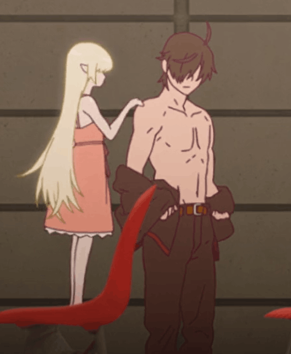
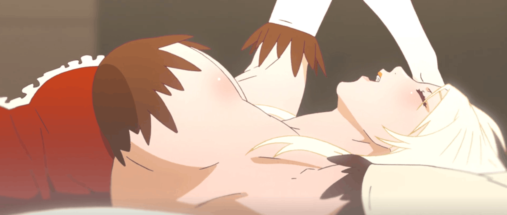
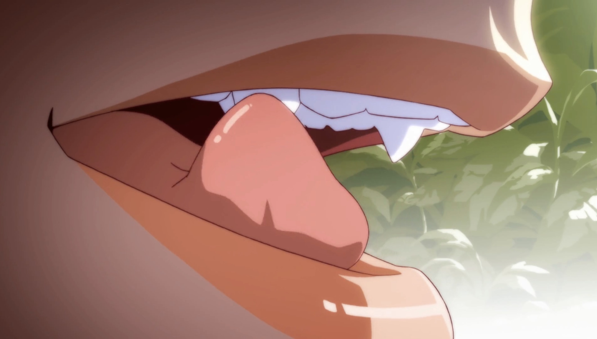

Monogatari Arc Rewatch Ranking- I will be updating this as I rewatch the arcs.



I really like shinobu's fangs, probably just because I like vampire fangs in general but hers are especially cute.
I really like Tsubasa's arcs, I honestly she has some of the strongest ones from early to midway through the seires. It is a little sad after Tsubasa Tiger though that most of her character development is done but I do not think that she needs to go through any mroe in life, I think that she has been through enough for many lifetimes. There is one more Tsubasa arc that is a lot later but I think it is a short one like Karen Ogre.